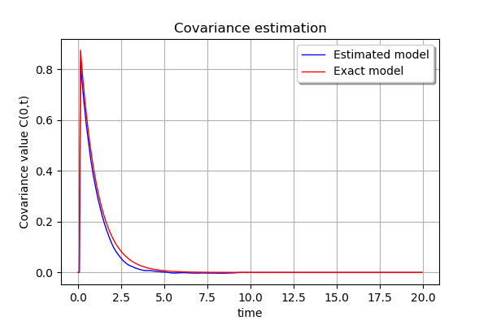

Estimate a stationary covariance function¶
The objective here is to estimate a stationary covariance model from data.
The library builds an estimation of the stationary covariance function on a ProcessSample or TimeSeries using the previous algorithm implemented in the StationaryCovarianceModelFactory class. The result consists in a UserDefinedStationaryCovarianceModel which is easy to manipulate.
Such an object is composed of a time grid and a collection of  square matrices of dimension d. corresponds to the number of time steps of the final time grid on which the covariance is estimated. When estimated from a time series , the UserDefinedStationaryCovarianceModel may have a time grid different from the initial time grid of the time series.
square matrices of dimension d. corresponds to the number of time steps of the final time grid on which the covariance is estimated. When estimated from a time series , the UserDefinedStationaryCovarianceModel may have a time grid different from the initial time grid of the time series.
[1]:
from __future__ import print_function
import openturns as ot
[2]:
# Create some 1-d normal process data with an Exponential covariance model
# Dimension parameter
dim = 1
# Create the time grid
t0 = 0.0
N = 300
t1 = 20.0
dt = (t1 - t0) / N
tgrid = ot.RegularGrid(t0, dt, N)
# Create the covariance model
amplitude = [1.0] * dim
scale = [1.0] * dim
covmodel = ot.ExponentialModel(scale, amplitude)
# Create a stationary Normal process with that covariance model
process = ot.GaussianProcess(covmodel, tgrid)
# Create a time series and a sample of time series
tseries = process.getRealization()
sample = process.getSample(1000)
[13]:
# Build a factory of stationary covariance function
covarianceFactory = ot.StationaryCovarianceModelFactory()
# Set the spectral factory algorithm
segmentNumber = 5
spectralFactory = ot.WelchFactory(ot.Hanning(), segmentNumber)
covarianceFactory.setSpectralModelFactory(spectralFactory)
# Check the current spectral factory
print(covarianceFactory.getSpectralModelFactory())
class=WelchFactory window = class=FilteringWindows implementation=class=Hanning blockNumber = 5 overlap = 0.5
[14]:
# Case 1 : Estimation on a ProcessSample
# The spectral model factory computes the spectral density function
# without using the block and overlap arguments of the Welch factories
estimatedModel_PS = covarianceFactory.build(sample)
# Case 2 : Estimation on a TimeSeries
# The spectral model factory compute the spectral density function using
# the block and overlap arguments of spectral model factories
estimatedModel_TS = covarianceFactory.build(tseries)
# Evaluate the covariance function at each time step
# Care : if estimated from a time series, the time grid has changed
for i in range(N):
tau = tgrid.getValue(i)
cov = estimatedModel_PS(tau)
[12]:
# Drawing...
sampleValueEstimated = ot.Sample(N, 1)
sampleValueModel = ot.Sample(N, 1)
for i in range(N):
t = tgrid.getValue(i)
for j in range(i - 1):
s = tgrid.getValue(j)
estimatedValue = estimatedModel_PS(t, s)
modelValue = covmodel(t, s)
if j == 0:
sampleValueEstimated[i, 0] = estimatedValue[0, 0]
sampleValueModel[i, 0] = modelValue[0, 0]
sampleT = tgrid.getVertices()
graph = ot.Graph('Covariance estimation', 'time', 'Covariance value C(0,t)', True)
curveEstimated = ot.Curve(sampleT, sampleValueEstimated, 'Estimated model')
graph.add(curveEstimated)
curveModel = ot.Curve(sampleT, sampleValueModel, 'Exact model')
curveModel.setColor('red')
graph.add(curveModel)
graph.setLegendPosition('topright')
graph
[12]:
